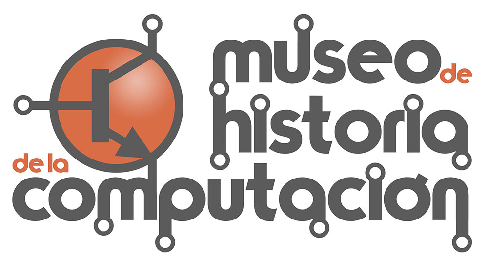

|  | La historia de la computación es un viaje fascinante que inicia
desde los antiguos artefactos de cálculo hasta las modernas supercomputadoras. A continuación,
exploramos los hitos clave de este viaje.
Primeros Dispositivos de CálculoÁbaco: Uno de los primeros dispositivos utilizados para cálculo. Su invención se remonta a antiguas civilizaciones como Mesopotamia y Egipto. Esta herramienta simple, pero eficaz, fue crucial para el comercio y las matemáticas básicas. La Era de la MecánicaLa máquina de Babbage: Considerada como el primer concepto de una computadora moderna. Charles Babbage diseñó esta máquina en el siglo XIX, pero nunca se construyó por completo durante su vida. La revolución ElectrónicaENIAC: La primera computadora electrónica de propósito general, marcando un hito en la historía de la tecnología. Fue crucial durante la Segunda Guerra Mundial para cálculos Balísticos. |
El Nacimiento de la Computación ModernaMicroprocesadores: El corazón de las computadoras modernas. Representan un gran avance en la miniaturización y potencia de procesamiento. La Era de InternetInternet: Un cambio revolucionario en la comunicación y procesamiento de datos, influenciando todos los aspectos de la sociedad. |
Home |